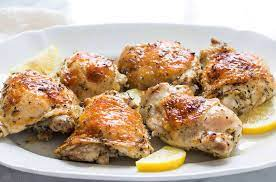

Back
Lemon Chicken

Lemon chicken is a dish consisting of chicken that has been prepared with lemons and herbs to get a unique flavour
Ingredients:
- 1/4 cup milk (Optional)
- 1 large egg
- 1 cup all-purpose flour
- 1 teaspoon lemon-pepper seasoning
- 4 skinless, boneless chicken breast halves
- 1/2 cup milk (Optional)
- 1/3 stick unsalted butter (Optional)
- 4 lemons, sliced
Steps:
- Preheat oven to 175 degrees C.
- Whip milk and egg together in a small bowl. Mix flour and lemon-pepper seasoning together in a another small bowl.
- Dip chicken in the egg mixture and then in the flour to coat completely. Place milk and butter in the bottom of a baking dish to keep the chicken nice and moist. Place coated chicken on top. Place lemon slices directly on the chicken. Cover with foil.
- Bake in the preheated oven until almost cooked through, about 30 minutes. Remove foil and continue to bake until no longer pink in the centers and juices run clear, about 15 minutes more. An instant-read thermometer inserted into the center should read at least 74 degrees C.
Back